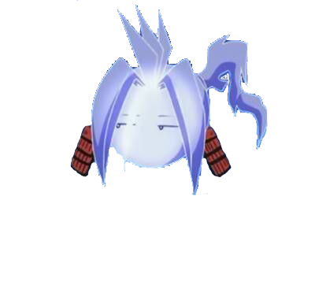

Yoh Asakuro
Shaman
Resume
— Hello! I’m a shaman Yoh Asakuro *I a slacker by nature, maintains a carefree, with a laid-back attitude about everything, even with achieving my goal of becoming Shaman King. Because i was alienated by everyone outside of the family he instead chose to bond with spirits and has decided that anyone who can see spirits cannot be evil. He has even gotten a signature catchphrase: "everything will work out" as a way of seeing things.
Experience
Education
Sep. 1991 – 2005- Slept all the time in class.
- Listened to music all the time, even at school.
- Sometimes cast out the spirits.
Personal life
In 1995- During the winter holidays, Yo learns from Yomei that a bride has been chosen for him, and the next day he goes to Kino's grandmother in Aomori. While Tamao consoles Yo, a mysterious spirit appears to them, and after defeating the annoying Ponti and Conti, it appears to them. Matamune accompanies Yo on his journey to Osore, they talk to each other on the train, and when Matamune said that he has no friends at all, Yo admits this and tells why it happened, Matamune notices his excitement before meeting his daughter-in-law, and after puts to sleep.
- I moved to Tokyo to take part in the future Shaman Clash and find himself a guardian. On the Fumbari hill, Yo first met Mantu Oyamada, who got scared of the spirits around him and fled from the hill. The two met again when Yo transferred to Shinra School, entering Manta's class. In the course of communication, Yo reveals to Mante that he is a shaman. When Manta decided to meet Yo at Fumbari Hill, he was beaten up by the Cornered Gang. To help his new friend Yo with the spirit of a samurai, Amidamaru defeats Ryu Umemiya and chases the bullies from the hill.
- I was trained from childhood. Yo went to kindergarten and was raised by his grandfather, as his mother was busy with work, and his father rarely appeared at home due to his lifestyle.
-
Song on Russian
-
Song on English
LIFE CREDO
CORE QUALIFICATIONS
Likes😃
Dislikes😞
SKILLS/HONORS/AWARDS
- Exorcise spirits
- Look at the river for a long time
- Guarded cemeteries
- Proficient skills in nothing to do
ORGANIZATIONS/CLUBS
- Loafers club
- Shaman club